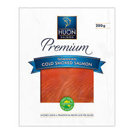

하우스메이트가 차가 없어서 잡에이젼시에 데려다 달라는 부탁을 받고 간 김에 할 것도 없어서 나도 지원을 했었다. 근데 왠걸 다음날 출근을 하라고 하네 그것도 HOUN 연어 공장에서 말이다. 여긴 Devonport 에서 가장 돈 많이 주는 곳으로 다들 가고싶어도 못가는 곳으로 유명한 곳이다. 기본 시급이 27.79면 말 다했지. 하지만 그보다 더 좋은 것은 주말, 공휴일 그리고 오버페이 적용이다. 토요일 38불, 일요일 50불, 공휴일 60불, 타임엔하프 33불 그리고 더블페이 44불이다. 기준은 정확하게 다 알고 있지는 못하지만 As Fucking Working holiday maker 만족 할 만한 시급이다. But 열심히 안하거나 일을 못하면 Roster를 잘 못받거나 시즌이 끝나갈 때 짤린다고 한다. 왼쪽 사진은 회사 로고이고 오른쪽 상품이 일하는 부서에서 주력상품으로 만드는 상품이다.
그래서 난 일을 졸라 열심히 해서 3개월 만에 속해있는 부서의 일을 다 배웠다. 그런데 결과는 9:30am 에서 2am roster로 움겨졌다. What the Fuck? 여기 특성상 첫번째 쉬프트 애들이 물량을 다 소화하고 두번 째 쉬프는 오지 아줌마 오지 할량이들이 와서 놀다가는 그런 구조다. 나는 오후에서 행복하게 일을 하고있었는데 이런 젠장. 문제는 2시에 일을 시작하러면 적어도 6시에는 자야하는 것이다 근데 어떻게 자냐고 해가 중천인데 그리고 문제는 share house 이기 때문에 시끄러울 수 있기 때문이다. 젠장 그래도 Team Leader or Supervior 가 Visa 얼마나 남았냐고 물어보고 일 오래했으면 좋겠다고 하니 짤리지는 않을 운명인 것 같다. 빨리 돈 벌고 한국 가고싶다. 젠장